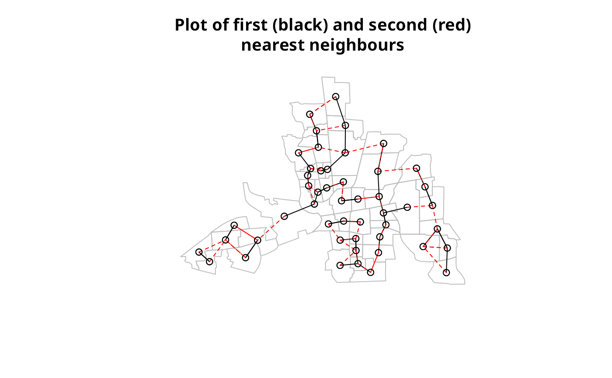

Differences between neighbours lists
diffnb.RdThe function finds differences between lists of neighbours, returning a nb neighbour list of those found
Author
Roger Bivand Roger.Bivand@nhh.no
Examples
columbus <- st_read(system.file("shapes/columbus.gpkg", package="spData")[1], quiet=TRUE)
coords <- st_centroid(st_geometry(columbus), of_largest_polygon=TRUE)
rn <- row.names(columbus)
knn1 <- knearneigh(coords, 1)
knn2 <- knearneigh(coords, 2)
nb1 <- knn2nb(knn1, row.names=rn)
#> Warning: neighbour object has 13 sub-graphs
nb2 <- knn2nb(knn2, row.names=rn)
diffs <- diffnb(nb2, nb1)
#> Warning: neighbour object has 10 sub-graphs
opar <- par(no.readonly=TRUE)
plot(st_geometry(columbus), border="grey", reset=FALSE,
main="Plot of first (black) and second (red)\nnearest neighbours")
plot(nb1, coords, add=TRUE)
plot(diffs, coords, add=TRUE, col="red", lty=2)

par(opar)